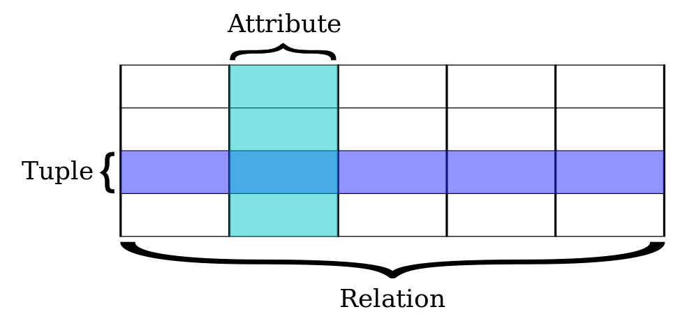
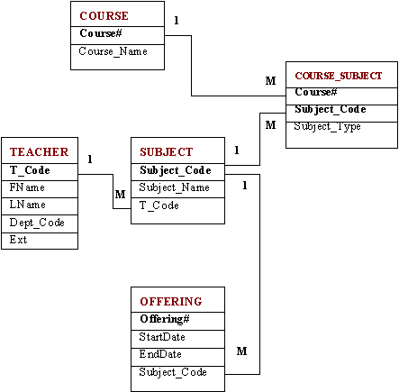
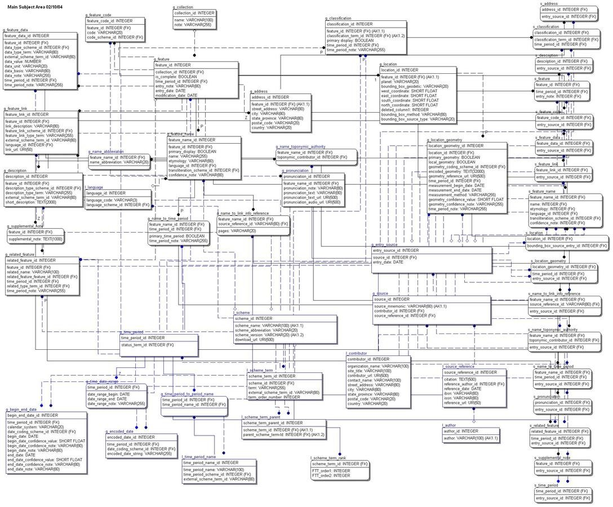

Mackenzie Brooks
October 24, 2019
Unit 1 = bag of words
Unit 2 = relationships
| Name | Species | Breed |
|---|---|---|
| Huxley | Felis catus | Domestic tabby |
| Orwell | Felis catus | Domestic demon |
| Harper | Canis lupus familiaris | Flat coat retriever |
| Biscuit | Canis lupus familiaris | Corgi |



SELECT column_name,column_name
FROM table_name
WHERE column_name operator value;SELECT * FROM pets
WHERE species='cat';<lg type="sestina">
<lg type="sestet" rhyme="ababab">
<l>I saw my soul at rest upon a <rhyme label="a" xml:id="A">day</rhyme></l>
<l>As a bird sleeping in the nest of <rhyme label="b" xml:id="B">night</rhyme>,</l>
<l>Among soft leaves that give the starlight <rhyme label="a" xml:id="C">way</rhyme></l>
<l>To touch its wings but not its eyes with <rhyme label="b" xml:id="D">light</rhyme>;</l>
<l>So that it knew as one in visions <rhyme label="a" xml:id="E">may</rhyme>,</l>
<l>And knew not as men waking, of <rhyme label="b" xml:id="F">delight</rhyme>.</l>
</lg><html prefix="og: http://ogp.me/ns#">
<head>
<title>The Rock (1996)</title>
<meta property="og:title" content="The Rock" />
<meta property="og:type" content="video.movie" />
<meta property="og:url" content="http://www.imdb.com/title/tt0117500/" />
<meta property="og:image" content="http://ia.media-imdb.com/images/rock.jpg" />
...
</head>
...
</html>
In Google, search for the following: site:yourURL.com
Subject > Predicate > Object
Luke > knows > Luke
Source: https://www.w3.org/TR/rdf11-primer/
Resource Description Framework (RDF) extends the linking structure of the Web to use URIs to name the relationship between things as well as the two ends of the link (this is usually referred to as a “triple”). Using this simple model, it allows structured and semi-structured data to be mixed, exposed, and shared across different applications.
This linking structure forms a directed, labeled graph, where the edges represent the named link between two resources, represented by the graph nodes. This graph view is the easiest possible mental model for RDF and is often used in easy-to-understand visual explanations.